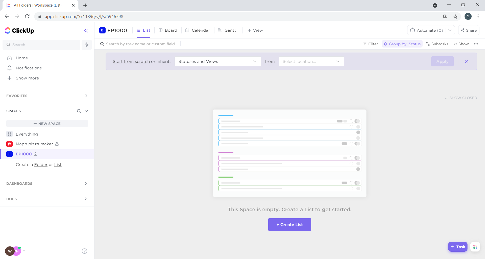
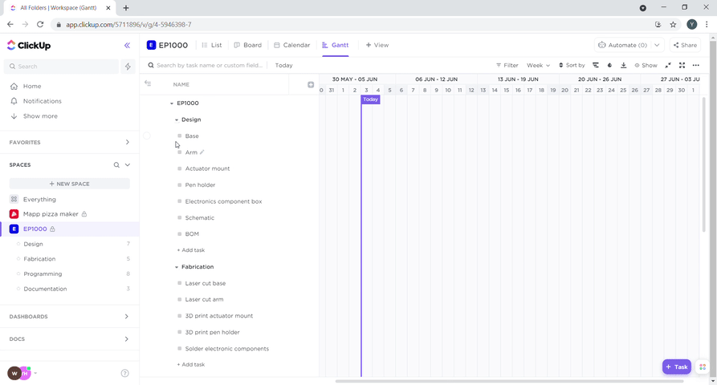

Project management with ClickUp.
Click up is a free project management tool that can help us create gantt charts, lists and track out tasks.
We create a "space" a project.
Click on new space.
A dialog will appear. Enter the project name in here.
Select the color and icon.
Configure the sharing settings if the project is being shared.
Select pre defined templates or create your own. If you are creating your own, add your own statuses.
Select views. I selected the gantt chart and the calender.
This is the default board with no lists and tasks. Lists are groups of tasks.
Click on new list to create a list. A dialog will appear, enter the list name.
To create a gantt chart, click on gantt at the top bar.
To create a gantt chart, click on gantt at the top bar.
Click on new task and enter the name of the task to create an new task.
To create new lists, click on the plus beside the space's name
Plot the gantt chart by selecting the task, then, clicking on the gantt chart. the start and end date can be selected by draging the semicircles.
Tasks can be rearranged by draging and dropping the task into the correct status.
Version control with Git.
Github can be used for version control as well as code and website hosting.
A repository is used to organise a project. To add a repository slick on the current repository, then add, then create new repository.

A dialog will appear. Enter the name and location of the repository.
The origin must be pulled to sync up local files with files already on the repository.
hanges can be commited.
A push needs to be done to upload files to the repository.